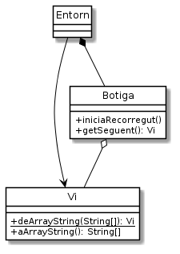

Exercici 05_04. Guardem les dades¶
Exercici 05_04. Guardem les dades¶
Context
Carpeta de lliurament:
05_04_csv/Continguts relacionats: Guardem les dades
Com lliurar-lo: instruccions
[✓] Exercici amb autoavaluació
Enunciat
En aquesta iteració del nostre projecte, afegirem la capacitat de guardar i recuperar les dades dels vins en un fitxer, de manera que puguin ser accedides en diferents execucions de l’aplicació.

Entorn en arrencar mirarà de llegir les dades del fitxer
botiga.csv. En cas de no existir, la botiga restarà buida. Tant si
existeix el fitxer com si no, Entorn informarà després del missatge
de benvinguda, quants vins ha carregat del fitxer. "Referències
llegides: 432".
En sortir, el programa guardarà les dades al fitxer. Per simplicitat,
guardarà les dades sempre, encara que no hi hagi hagut canvis. Abans del
missatge de comiat, indicarà el nombre de vins guardats al fitxer.
"Referències guardades: 432".
Dotarem a la classe Vi d’un parell de mètodes nous que
ens simplificaran la tasca de convertir de línies de csv a vi i viceversa.
deArrayString(): aquest mètode estàtic rep un array de Strings que ha de contenir els valors dels diferents atributs d’un vi en forma de String i ens retorna un vi inicialitzat amb aquests valors. Si algun dels valors rebuts no fos adequat per l’atribut corresponent de vi, retornarànull.aArrayString(): aquest mètode retorna un array de Strings amb els valors del vi.
L’ordre dels atributs a l’array de Strings pot ser el que vulguem, sempre
i quant sigui el mateix per deArrayString() i aArrayString(). Per
exemple, podria ser nom, preu, estoc.
Per carregar els vins del fitxer no ens cal cap modificació de Botiga
doncs podem anar llegint línia a línia, convertint-lo a Vi amb l’ajut
de Vi.deArrayString() i, si hem tingut èxit, afegir el nou vi de la
manera habitual a la botiga.
Per guardar els vins que ja hi són a la botiga, però, sí ens cal quelcom
que encara no tenim: la possibilitat de recòrrer tots els vins que
disposa la botiga. Per a aconseguir aquesta funcionalitat, afegirem dos
nous mètodes a Botiga:
iniciaRecorregut(): comença el recorregut dels vins de la botiga.getSeguent(): retorna el següent vi del recorregut. Si no hi ha més vins, retornarànull.
Així, per mostrar tots els vins disponibles a la botiga, podrem fer quelcom similar a:
1 2 3 4 5 6 | botiga.iniciaRecorregut();
while (true) {
Vi vi = botiga.getSeguent();
if (vi == null) break;
System.out.println(vi);
}
|
Considerarem que el fitxer CSV no conté capçaleres i que les files
hauran de correspondre als valors separats per punt i coma (;) i no
per una simple coma, doncs sospitem que algun vi podria tenir un nom tan
sofisticat que requerís aquest símbol.
Un exemple de contingut esperable al fitxer botiga.csv podria ser:
Roura blanc;1234;24
El Quintà;1485;12
Almodi Petit Blanc;570;32
En cas que trobem una línia del fitxer que no contingui totes les dades
requerides, o bé que el valor d’algun dels camps no sigui convertible al
tipus que esperem, simplement la ignorarem. D’aquestes comprovacions se
n’encarrega el mètode Vi.deArrayString().
Què haig de fer?¶
Implementa els canvis necessaris perquè l’aplicació pugui mantenir la informació de vins d’una execució a la següent.
Els canvis a realitzar són:
afegir els nous mètodes a
Botiga.afegir els nous mètodes a
Vi.afegir la funcionalitat a l’entorn de carregar en arrencar i guardar en sortir.
Pistes¶
Llegeix això només si trobes problemes per realitzar alguna de les parts d’aquesta ampliació.
Ajuntar i separar línies de CSV¶
Un dels problemes que has de resoldre per realitzar aquesta ampliació és la manipulació de línies de CSV.
Per convertir les línies de CSV a un array de Strings ja saps que disposes
del mètode String.split()
però, com fas l’operació inversa? Per descomptat, la pots programar amb un
bucle. A aquestes alçades segur que no et resulta difícil composar un
String amb els elements d’un array separats per ;. Hi ha però una
opció més elegant: String.join().
Considera aquest fragment de codi que converteix una entrada amb elements
separats per , als mateixos elements però separats per ;:
1 2 3 | String comes = "una,dues,tres";
String[] paraules = comes.split(","); // {"una", "dues", "tres"}
String puntIComes = String.join(";", paraules); // una;dues;tres
|
Recorregut de la botiga¶
Per poder guardar els vins de la botiga, ens cal poder accedir a aquests
de manera seqüencial. El problema és que fins ara Botiga només ens
permet consultar els vins a partir del mètode cerca(), que no és
adequat pel nostre objectiu actual.
El que ens cal és poder recorrer els vins des del primer al darrer, com
si fos un array de vins. Com que no volem lliurar l’array de vins amb el
que emmagatzema Botiga els vins, el que farem serà implementar un
mecanisme de recorregut casolà.
La idea bàsica és que et cal una nova variable () que et permeti saber quin serà el següent vi a retornar. Aquesta variable haurà de posar-se a 0 quan es demana iniciar el recorregut i anar-se incrementant a mida que ens van demanant retornar el següent. En el moment que arriba al límit de l’array de vins, no ha de continuar.
Un problema és que no totes les posicions de l’array de vins estan sempre
ocupades. Amb la implementació actual, quan eliminem un vi, marquem la
seva posició amb null. Això obligarà el teu getSeguent() a saltar
espais buits.